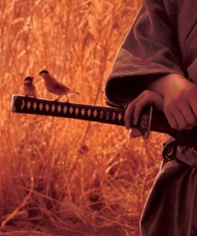
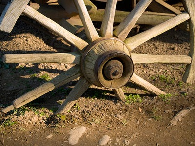

mutfakta samuray var
İki kafadar arkadaşımız bir ara kılıca merak salmışlar. Ama mesele sadece kılıç kullanmak değil. Asıl amaç “samuray” olmak. Sonra çıkmışlar yola. İstanbul’da bulmuşlar bir kılıç okulu. İçeri girmişler. Abinin bir tanesi içeride sakince çayını yudumlamaktaymış. Tütsü, müzik, çay falan… Hah demişler bulduk ustayı. Geçip karşısına biz samuray olmak istiyoruz demişler. Kılıç dersi istiyorsanız, saatleri şöyle böyle demiş üstat. Yok demişler öyle değil, biz baya bildiğin samuray olmak istiyoruz. (İşte ekranın titreşip necefli maşrapanın devreye girdiği an burası.) Abi boğazında kalan çayı yutmayı başardıktan sonra, yalnız o işler öyle olmuyor demiş. Ah o hayal kırıklıkları yok mu? Sonra da anlatmış bizimkilere:
Bu samuray denen abiler, feodal Japonya’da derebeyleri tarafından yönetilen bölgeleri koruyan ve onlar için savaşan, soylu askeri sınıftır. Tamamen kendi içlerinde klanlar halinde yaşarlar ve çok küçük yaştan itibaren yetiştirilirler. Sonradan olmazlar, o klanın içinde samuray olarak doğarlar. Kullandıkları kılıcın samurayın ruhunu taşıdığını söylerler. Şimdi konumuz olmadığından detaylarına girmeyeceğim, ama içinde yaşadığımız “medeni” toplumun bakış açısından delice görülebilecek yöntemlerle yaşarlar. Adeta, küçük bir çelik parçasının ateşlerde yanıp çekiçlerle günlerce dövülerek keskin bir kılıca dönüşmesi gibi, kendi ruhlarını ve bedenlerini acımasızca eğitirler. Sonunda ölüm ve yaşam kavramları tamamen ortadan kalkmış mükemmel savaşçılara dönüşürler. Ayrıca geriye kalan hayatlarını da hizmet ederek geçirirler. Samuray kelimesinin gerçek anlamı da ‘hizmet eden’dir zaten.
Peki siz eğitiminize nereden başlamak istersiniz acaba? Tavsiye edebileceğim bir kaç yol var isterseniz. Aslında hali hazırda feodal düzene ihtiyaç duymadan aramızdan yaşayan, her nefeslerinde zihinlerini keskinleştirmekle uğraşan başka tür samuraylardan bahsedeceğim size. Bu samurayların kılıcı öldürmüyor, aksine yaşam veriyor. Hatta soğan doğruyor, patates soyuyor ve yaptıkları yemekler afiyetle yeniyor.
Daha önce, bir çok kez vipassana meditasyonu hakkında yazmıştım. Olanı olduğu gibi görmek anlamına gelen Vipassana, 2500 yıllık tarihi olan bir teknik. Bir çok ülkede merkezlerde ücretsiz olarak öğretiliyor. Ücretsiz dedim ama, aslında bir beklentileri var. O da bir sonraki 10 günlük kursa gönüllü olarak katılıp hizmet vermeniz. Böylece başka insanların da kurstan fayda görmelerine yardımcı oluyorsunuz. Türkiye gibi merkezi olmayan ülkelerde ise, daha önce bir 10 günlük kurs bitirmiş gönüllü insanlar sayesinde bu kurslar organize ediliyor. İşte o kurslardan bir tanesi geçtiğimiz nisan ayında yapıldı ve ben de hizmet etmek üzere oradaydım.
Kuşadası’nda bir oteldeydik ve hayır, 5 yıldızlı otelde konfor içinde değildik. Sezon dışında kapalı olup, böyle bir çalışmayı en az bütçeyle kabul eden mekan orasıydı. Otelde kursa katılacak eski yeni 100 öğrenci ve onların tüm ihtiyaçlarını karşılayacak 9 kişi dışında hiç kimse yoktu. Sıfırıncı günün sonunda otel dışarıya kapandı ve hiç kimse girip çıkmadı. Bana yüzdünüz mü diye soran arkadaşlara selam ederek, otele girdikten yarım saat sonra kendimi aşağıdaki devasa mutfakta bulduğumu söylemek isterim. Böyle başladı 10 günlük maraton.
Kurs boyunca öğrencilerin konuşması yasak. Mutlak sessizlik tekniği doğru biçimde öğrenmenin en önemli şartlarından biri. Şimdi bu insanların belli saatlerde beslenmeleri, su içmeleri, duş alabilmeleri ya da ellerinin altında tuvalet kağıtlarının olması gerekiyor. Ama bir taraftan konuşmamaları gerekiyor. İşte bu noktada samuraylarımız devreye giriyor.
Gün sabah 03:45’de başlar. Bir kaçımız 05:00’a kadar uyuyabilirler. Ama en azından iki kişi uyandırma çanlarını çalmak için o saatte ayakta olmalı. Çanlar çalınır, mutfağa inilip şöyle bir kontrol edilir ve sabah meditasyonu için salona çıkılır. 05:30’da herkes mutfaktadır ve kahvaltı hazırlanmaya başlar. Bu sırada öğrencilerin kaldığı katlara damacanalarla su dağıtılır (benim görevlerimden biri buydu). Kahvaltı tamamlanırken bulaşıklar gelmeye başlar. Hani o deterjan reklamlarında vardır ya dağ gibi bulaşık, işte o gerçekmiş meğer. Sağolsunlar kursta günler ilerledikçe, zihinler açıldıkça, öğrenciler kendi tabaklarını daha temiz bırakır oldular. Bulaşıkhanede kirlileri sabunlu sudan geçir, sonra duru sudan geçir, sepete diz, sepeti makinaya ver, makina yıkarken ikinci sepet hazırlansın, makinadan çıkanları kurulayıp yerine koyarken ikinci sepeti makinaya al, üçüncüsü yola çıksın, bu arada bir ara öbür tarafa koş büyük parçalardan bir ikisini yıka, makinanın durduğunu duyunca geri koş, sepeti değiştir, kurula, yerine koy, koş iki tencere daha yıka… Keza bu esnada öğle yemeği hazırlıkları başlamıştır bile. Herkes yemeklerin, temizliklerin bir ucundan tutmuş koşturmaktadır. Derken bulaşıklar bitemeden grup oturumu saati gelmiş olur. Haydi bakalım, kılıçlarımızı keskinleştirme zamanı! Bir saatlik meditasyonumuzu yaptıktan sonra, öğrenciler çalışmalarına devam ederken biz mutfağımıza geri döneriz. Böylece öğle yemeğinin servis edilmesine yarım saat kala bulaşıklar biter. Hızlı ve ayaküstü bir şeyler yedikten sonra, katlarda sular bitmiş mi kontrol et, bitenleri değiştir. Öğle yemeği… Derin bir nefes al ve yeniden başla, yeniden başla, yeniden başla, bir sonraki grup oturumuna kadar bulaşıklar bitsin. Bu, 3. günden sonra saniye boşa harcanmadan, makinaya uyum sağlamış bir tempoyla bir saatten fazla sürer. Sonra meditasyon. Sonra 5 çayının hazırlıkları, arkasından yıkanacak çay bardakları. Tekrar başla… Ardından meditasyonumuz ve akşam dinletisi sırasında hala devam eden işler. Ertesi günün yemek hazırlıkları… Derken son oturum. Ardından mutfakta kontroller. Sanırım her şey yolundaysa 23:00’a doğru yataklarımızda oluruz. Evet…….
30 kilo ayvayı rendeleyip, içinde duş yapabileceğim bir tencerede reçel yapmak, her gün sonu gelmeyen soğanları doğrarken, aydınlanmaya, gözyaşlarıyla adım adım yaklaşmak, 8 tane kocaman kabağı tatlı olmaya hazırlamak ve herkese yetecek kadar poğaça yapmak 10 günün unutulmaz anlarındandı. Hele ki kursun son günü bütün iyi dileklerimizi içine katarak yaptığımız şekerpare… İlk kursuna katılan Ömür, o şekerpareden ilk çatalı aldığında gözyaşlarını zor tuttuğunu anlatırken ben de benzer bir deneyim yaşıyordum.
Her gün aralıksız süren fiziksel çalışma işin bir kısmıydı. Aslında eğitim sürekli devam ediyordu. Bizim de günde 3 ya da 4 saat meditasyon yapma şansımız oluyordu. Bu oturumlar sayesinde kendimizi tazeleyip, sonra da gün boyu çalışırken bu tazeliği koruyabilmemiz gerekiyordu. Aslında dhamma hizmeti vermenin en önemli noktalarından biri bu. Zira “nereye kadar, yalan bu dünya” diye ilk kursuna tekniği öğrenmek için gittiğinde, doğru biçimde öğrenebilmen için tüm şartlar sağlanmış oluyor. Telefon yok, konuşmak yok, ihtiyaç yok, dert yok tasa yok. Orada aydınlanmak kolay (kursa katılan arkadaşların neresi kolay dediğini duyar gibiyim). Ama kurstan çıkıp da günlük hayata karışınca bu dengeli zihin durumunu korumak zor. İşte o zaman çalışabileceğin, yorulabileceğin ve hatta bazen senden bambaşka karakterlerde insanlarla daracık bir ortamda birlike iş çıkarmak durumunda olacağın, üstüne üstlük egona küfür eder gibi bunları hiç bir karşılık beklemeden yaparken farkındalığını ve dengeliliğini koruyabileceğin bir ortamı deneyimlemen gerekiyor.İşte o ortam mutfak oluyor ve aydınlanmaya giden yol mutfaktan geçiyor.
Vipassana mutfağı tüm yaşamın küçük bir örneğini, similasyonunu sunar insana. O korkunç tempo içinde insan hem kendini hem de başkaları üzerindeki etkisini farkeder. Herkesin zihninin cam gibi keskinleştiği bir ortamda en ufak titreşim tsunamiye dönüyormuş gerçekten. Yemek yaparken düşündüklerine, motivasyonuna dikkat etmelisin, kafanda son gün bir künefe mi yapsak acaba diye geçiyorsa, yukarıda meditasyon yapan Gökhan, 3 gün boyunca künefe arzusuyla uğraşmak zorunda kalabilir. Beyninde kopan fırtınalarla uğraşmakta olan Tolga, ben yanından geçerken kafamı eğip yüzümü saklamış olsam da, içimdeki gülümsemeyi farkedip kafası karışabilir. Yapmamak gerektiği halde elimde olmadan Nergiz’le her göz göze gelişimizin hikayelerini eve döndüğümüzde dinledim ve üzgünüm sevgililik müessesine sığınarak bunları paylaşmıyorum.
Tüm bunlar olurken insan ister istemez, günlük yaşamımda dikkatsizliğimle kim bilir nelere sebep oluyorumdur diye düşünmeden edemiyor. Enerjiye ihtiyacım var diye ne kadar çok yiyorum ve ne kadar çok enerjiyi yediklerimi hazmetmek için boşa harcıyorum. Bunu farkettiğimden beri kurstaki yemek düzenimi günlük hayatıma taşıdım. Tüm yemekleri hafif yiyip günün son yemeğini akşam 5’te yiyorum ve haftasonları toplam 8 saat aikido dersine giriyorum. Yine de kurstaki performansımın yarısına ulaşabilmiş olsam sanırım uçarak aikido yapabilirim. Keza yorgunluk, orada burada yaptıklarımdan değil, içeride yaptıklarımdan kaynaklanıyormuş meğer. Evet çoğunuzun bilmediği, yeni bir şey değil bu. Yeni olan, bu bilgiyi birilerinden ya da kitaplardan değil, deneyimle elde ettiğinde zorlanmadan ve anında uygulanabilen bir şey olması, anında hayatın parçası haline gelmiş olması. Şu an sanki hep böyleymişim gibi hissediyorum ama iki ay önce, gece dersten çıktıktan sonra köfteciye gider öyle uyurdum.
Karşılıksız vermek, koşulsuz sevgiyi ve şefkati deneyimlemek… Bunlar neredeyse tüm ruhsal arayışların, öğretilerin bahsettiği şeylerken, bunu gerçekten deneyimle şansı çok az yerde bulunabilir. Gidip bir tapınağa kapanabilirsin elbette. Ama onun dışında böyle bir kursta hizmet etmeyi deneyimlediğinde, elinde olmadan geliştirdiğin özellikler olur bunlar. Kendinden geçip, geçtiğin kadar başkalarını önemseyebilmek hali… Her an orada oturup, çabalayan insanlarla nasıl bir bağın olduğunu fikirsel değil fiziksel olarak idrak etmek… Yorulmak nedir bilmeden çalışırken, bir avuç yemekle sınırsız enerji üretebilmek… Sonunda yaşama ve tüm varlıklara farklı bir gözle bakmaya başlamak ve aslında bilincin derinliklerinde, alışkanlıklardan oluşan çarpıklıkların gölgesinde yaşadığını farketmek… İşte sen hizmetini karşılıksız, pazarlıksız, açıklıkla vermiş olsan da, evrensel kanunlar sana karşığını böyle adım adım veriyor. Yoksa aslında bedava çalışmıyoruz yani.
Şimdi soruyorum, bir sonraki kursta ben oturmaya gideceğim. Kim Buda’nın elleriyle soğan doğrayıp, ruhunu devasa mutfak ocaklarında, kepçelerle dövüp, az baharatla kendini terbiye ederek gerçekliğin yolcularına katılmak, bir dhamma samurayı olmak ister?


{kind=link}
{kind=link}
{kind=link}
Samuraylık zor zanaat, kılıcına iyi bakman gerek, her gün en az günde iki saat eline alıp güzelce temizlemen gerek,
Kılıç öyle paslanmıştır ki kullanmaya kullanmaya, 1 er saat oturur keskinleştirmeye çalışırsın kılıcını, mutfak samurayların pratik alanı, kimsenin canını yakmadan, incitmeden, kırmadan kılıcı kullanabilmen gerekir. Becere bilene! kılıcına iyi bakan, iyi kullanan hasarsız atlatır günü. Arada değersin kılıcının paslı yeriyle arkadaşına yada kendine işte o an fark edip temizlemen gerekir hasarı, yarayı sarman gerekir. o anda ayıkır koşarsın yine paslı kılıcını keskinleştirmeye, fak edemezsen yakarsın yemeğin altını ya da kırarsın tüm bardakları : )
Kılıcına sağlık Oğuzhan
Tüm Dhamma hizmetlilerine sevgiyle 🙂
Metta 🙂
Be happy 🙂